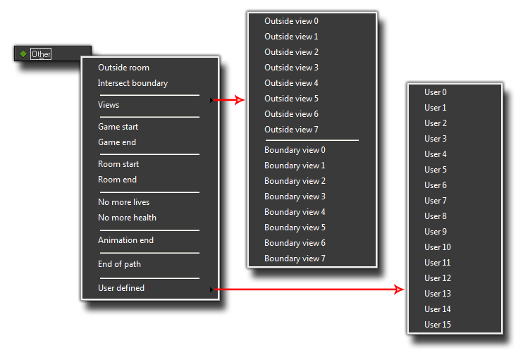

The Other Event
The other events are some of the many events that can be triggered in an instance and may contain code or actions.
 Other Events
Other Events
There are a number of special events for use when making games with GameMaker:Studio and they are mostly grouped together under the Other event and can be selected from the pop up menu
of sub events that comes up when you select this. Here is an image of all these other events :

Outside Room
This event is triggered when an instance goes outside the room, and is based on a check done against the assigned sprite (and its properties) of the instance, so that even if you have set the image x or y scale to a value other
than one, this event will only be triggered when the whole sprite would be out the screen. If the instance has no sprite, then the position of the instance is used and the moment its x or y position is outside of the room
then it will trigger the event too. This event is typically used for things like bullets, where they are destroyed once they leave the room so you don't end up with millions of bullets flying away infinitely
and causing your game to slow down.
Intersect Boundary
This event is triggered when an instance "touches" the inside edge of the room, and, like the outside room event, is based on a check done against the assigned sprite (and its properties) of the instance, so that even if you have set the image x or y scale to a value other than one, this event still be triggered the moment a part of the sprite intersects the room boundary. If the instance has no sprite, then the position of the instance is used and the moment its x or y position intersects the room boundary then it will trigger the event too. You can use this event to do things like tell an instance to "bounce" back in towards the room again rather than go outside.
Views
Views are normally defined in the room editor and used to show only a small area of a large room at any one time. This event has its own sub event list that is split into two categories (outside view and intersect boundary), with eight different events in each corresponding to the eight available views. These two categories function exactly the same as the respective room events, only taking the boundary of the view as the thing for the instance to check against rather than the room.
Game Start
This special event is triggered only once in the whole game and only for those instances with actions or code placed in the event. These instances must be present in the first room of the game and have been placed there in the room editor, rather than have been created dynamically. It should be noted that this event happens after the create event of all instances and so can contain code or actions with variables that have been previously defined in that event. This event is typically defined in only one "controller" object and is typically used to initialize global variables, start music, read from files and any other thing that is usually only done once at the start of a game.
Game End
Similar to the above mentioned Game Start event, this event is only triggered once in the whole game and that is just before the game window actually closes. Again, for an instance with this event to actually do anything it has to be in the room as the game is closed. Please note that this event in really only viable for Windows, Ubuntu (Linux) and MacOS games as mobile devices may just close the game without giving GameMaker:Studio the chance to call this event. For browser games made with the HTML5 module, this event should work when the game tab or browser is closed, but not all browsers support this feature (Firefox, Chrome and Safari do at the time of writing) so care must be taken when using it. Typically you would use this event to save data.
Room Start
This event happens for all instances initially in a room when the room starts. Please note that it happens after the creation event and so can depend on variables and things defined previously in that event.
Room End
This event happens to all instances that are in the room when the room ends. This event is very useful for "cleaning up" after a level has ended, for example you can delete loaded resources here, or remove a particle system to prevent memory leaks etc...
No More Lives
GameMaker:Studio has a built-in lives system, which is basically a global scope variable that is created for you at the start of a game. There is an action to set and change the number of lives, and you also have the option to manipulate this variable through code. This event will be triggered whenever the number of lives becomes less than or equal to 0 and it is typically used to end or restart the room.
No More Health
GameMaker:Studio has a built-in health system, which, like Lives above, is basically a global scope variable that is created for you at the start of a game. There are actions to set and change the health variable as well as to draw a health-bar, with code available to change them too should you prefer to use GML. This event is triggered whenever the health becomes less than or equal to 0. It is typically used to reduce the number of lives or to restart the game or room.
Animation End
In GameMaker:Studio sprites are not static things as they can have sub-images and be animated at different speeds. Each frame of an animation (called a sub-image) has its own number, starting at 0, which can be checked in code or even through actions, but sometimes all you really need to know is when the animation has ended. That's when this event is triggered, right at the end f the animation when the sub image index shows that the last frame has been reached. This event is really useful for many things, for example an explosion object where you can set the instance to destroy itself when the last frame of the animation is reached.
End Of Path
Paths can be an important part of making any game, whether it is for a tower defense type game, or a shoot-em-up or whatever, and it's often really important that an instance does some particular action when it reaches the end of its path. This event detects this and is triggered when it happens allowing you to add in code or actions to deal with the circumstances, for example in a tower defense game you would use this to destroy the instance and remove a health point from the goal object.
User Defined Event
These are special events that are not triggered by GameMaker:Studio itself, but have to be implicitly called by you from a code box while the game is running. These events can contain code or actions and do the same things
as any other event, making them very useful for creating your own events that happen when you decide and not GameMaker:Studio decides!